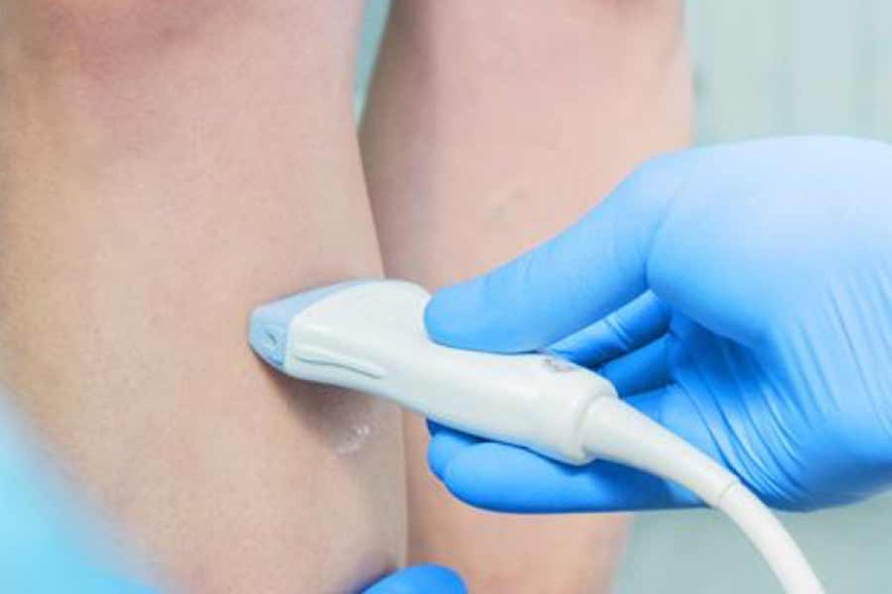
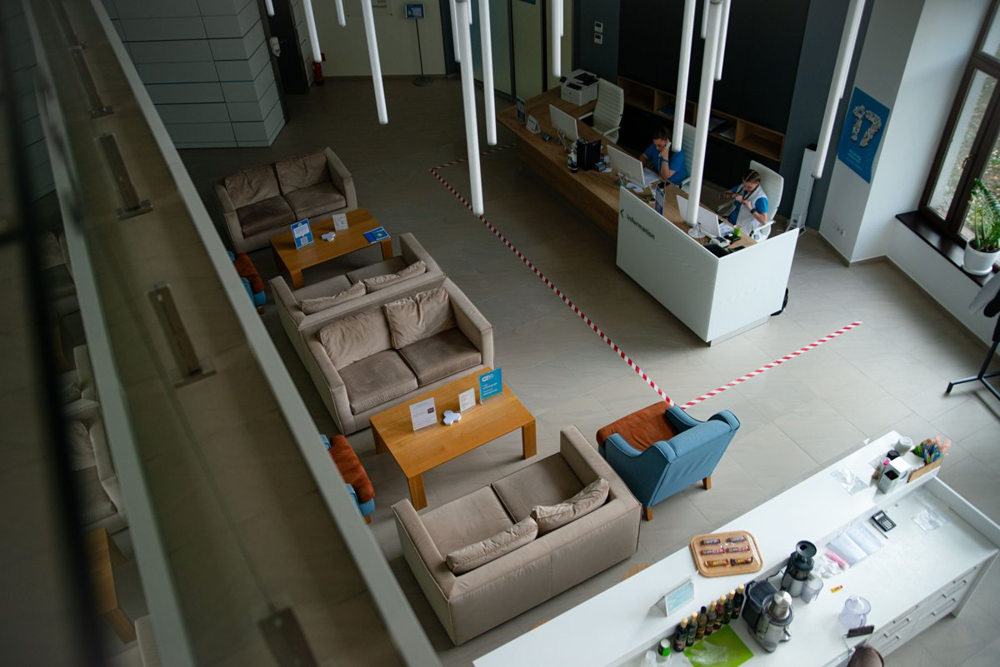
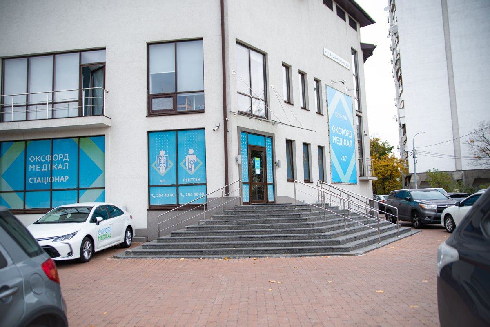
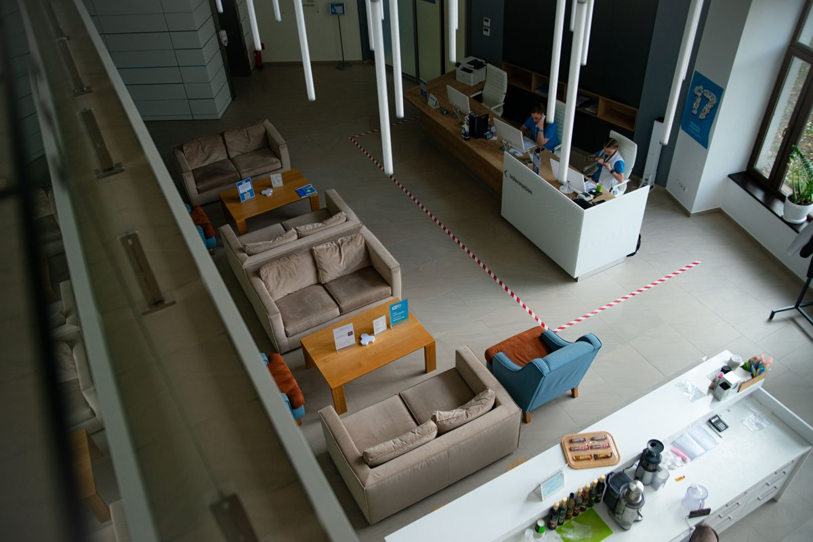
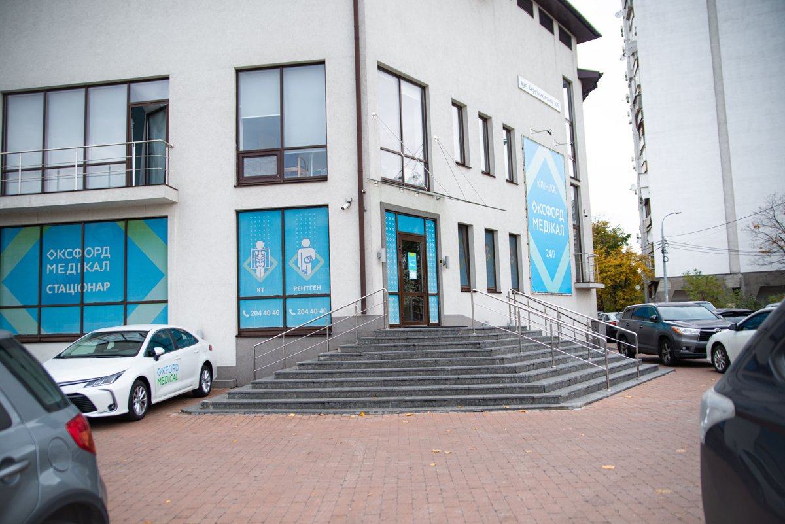

Провідний лікар-флеболог, лікар-хірург вищої категорії.
В даний час, дуже важкий час ми все одно повинні думати про своє здоров'я. Варикозна хвороба нижніх кінцівок це не тільки косметична проблема. Дуже часто ця хвороба переходить у стадію важких ускладнень, які можуть призвести людину до стійкої втрати працездатності та навіть інвалідності. Я пропоную сучасне, безпечне лікування варикозу на основі свого великого досвіду в хірургії та комфорту та сервісу клініки Оксфорд медікал. Краса та здоров'я Ваших ніг у Ваших руках!
Відгуки
Варто знати
Коли варто звернутись до флеболога
Варто звернутись, якщо турбує:
• варикозно розширені вени • біль в нижніх кінцівках • набряки • трофічні зміни м’яких тканин • потемніння та ущільнення шкіри • трофічні виразки • тромбоз та тромбофлебіт • кровотеча з варикозно розширених вен
• ретикулярний варикоз - косметично
• судиннi сiточки i зiрочки
ПРО МЕНЕ
Зав’ялов Юрій Петрович
Провідний лікар-флеболог, лікар-хірург вищої категорії.
Лікування варикозної хвороби вен нижніх кінцівок всіма видами сучасних
внутрішньосудинних втручань, включаючи ендовенозну лазерну коагуляцію вен (ЕВЛК) ,
радіочастотну абляцію (РЧА), використання біологічного клею (VenaSeal), а також
склеротерапію.
З 2012 по 2022 роки мною виконано понад 2000 ендовенозних втручань з приводу
варикозної хвороби вен нижніх кінцівок.
Усі операції проводять у нашій новій сучасній клініці Оксфорд Медікал, яка розташована на лівому березі за адресою: Березняківська 30Б, у цій клініці проходять усі операції, пацієнти перебувають під пильним наглядом лікаря і медперсоналу, клініка обладнана всіма необхідними ультратехнологічними апаратами для проведення максимально безболісних і якісних операцій, у клініці індивідуальний підхід до кожного нашого пацієнта, уважність, турбота та повний супровід і підтримка на кожному етапі лікування.
Методи лікування
Ультразвукове обстеження вен нижніх кінцівок

Для того, щоб виявити або виключити патологію артеріального і венозного кровообігу, а так само підібрати необхідне лікування-використовують метод ультразвукової діагностики.
Радіочастотна абляція вен (РЧА), ендовенозна радіочастотна коагуляція або облітерація вен - це малотравматичний і один із найперспективніших способів лікування захворювання вен нижніх кінцівок. У його основі лежить радіохвильовий вплив на внутрішню оболонку судини, внаслідок чого вена склеюється, і кровотік у ній припиняється.
Ендовенозна лазерна абляція (ЕВЛА) — один із сучасних методів лікування варикозної хвороби, який полягає у тому, щоб замість перев’язки або видалення “хворого” стовбуру магістральних підшкірних вен його нагрівають (спалюють) лазером зсередини (ендовенозно).
Клейова облітерація - унікальний і абсолютно безпечний метод боротьби з варикозним розширенням вен без розрізів, видалення судин і носіння компресійного трикотажу.
Суть процедури полягає у введенні в просвіт ураженої вени біологічного клею VenaSeal Closure System. Ця речовина спричиняє склеювання внутрішніх стінок судини та сприяє перенаправленню кровотоку по здорових венах.
Мініфлебектомія - це малоінвазивний спосіб видалення варикозних вузлів і вен за допомогою проколів. При операції не проводиться розрізів, що дозволяє мінімізувати травматичність і терміни реабілітації.
При нажатии на кнопку, окно где можно взять текст с оригинала, и вместо видео добавить эту фотку
Мікросклеротерапія – найделікатніший метод, що застосовується для усунення найдрібніших сіточок. Використовується для досягнення найкращого естетичного результату, що особливо важливо для вимогливих пацієнтів.
Якщо вас турбують набряки нижніх кінцівок, важкість в ногах, нічні судоми, ви побачили перші варикозні розширені вени, які контуруються та випирають над шкірою, присутня судинна сітка, то потрібно звернутися до спеціаліста.
Ендовенозна лазерна коагуляція (ЕВЛК) являється золотим стандартом лікування Варикозної хвороби у всьому світі.
Це метод РАДИКАЛЬНОГО лікування варикозної хвороби, який не тільки не поступається відкритій хірургії, а й набагато ПЕРЕВЕРШУЄ.
Проте вкрай важливо, виконувати ендовенозну лазерну абляцію під контролем УЗД та досконально володіти технікою, притримуватися останніх рекомендацій щодо ведення пацієнтів з венозною патологією та мати вагомий досвід в проведенні даних втручань.
Послідовність підготовки така:
1. Проводимо ультразвукове дослідження вен нижніх кінцівок
2. Визначаємось з планом та об’ємом лікування
3. Лабораторні обстеження: загальний аналіз крові, коагулограмма, цукор крові, біохімічний аналіз крові, RW, вірусні гепатити
4. Кардіолог/Терапевт - при потребі
5. Напередодні треба поголити нижні кінцівки
6. Безпосередньо перед процедурою проводиться передопераційна розмітка під УЗД- контролем
Що ж відбувається в операційній?
✅ Проводиться пункція вени під контролем та вводиться лазерний світовод в просвіт вени під контролем УЗД
✅ Вводиться анестетик, навколо вени та формується так звана «подушка», яка виконує декілька завдань: зменшує просвіт вени та захищає навколишні тканини, від термічної дії лазера, треба зауважити, що тумесцентна анестезія - це невід’ємна частина сучасної флебологіі, і дає можливість робити оперативні втручання під місцевою анестезією, при цьому знечулюється тільки та ділянка, де проводяться маніпуляції, пацієнт знаходиться в повній свідомості та відчуває свої нижні кінцівки, ніяких уколів в спину та спинно-мозкової анестезії, також не має потреби в проведенні медикаментозного сну та проведенні седаціі, навпаки, вкрай важливо, щоб пацієнт був в свідомості, та після проведення процедури встав та пішов.
Рання активізація пацієнта нівелює післяопераційні ускладнення.
✅ Під контролем УЗД виконується лазерна абляція, лазерне випромінювання діє на внутрішню стінку вену, яка руйнується та перетворюється згодом в сполучно- тканинний тяж, який повністю розсмоктується та зникає.
✅ Процес ЕВЛК- абсолютно безболісний, єдине, що відчуває пацієнт неприємного- це уколи тоненькою голкою під час анестезії
✅ Після накладання марлевих серветок на ніжку вдягають спеціально підібрану панчоху.
✅ Пацієнт встає з операційного столу та йде додому.
✅ На слідуючий день знімаються пов’язки.
✅На 7- му добу - УЗД контроль
✅ Всі проколи загоюються за тиждень, синячки сходять за три тижні.
✅ Панчохи носимо 3 тижні
✅ Реабілітація: багато рухатись, не менше двох годин піших прогулянок вдень протягом двох недвль, не піднімати велику вагу, коли напружуються м’язи пресу, і це ніяк не впливає на Ваше повсякденне життя.
Декілька годин в операційній і одразу після втручання Ви йдете своїми ніжками додому.
Період відновлення триває кілька тижнів, але це абсолютно ніяк не впливає на якість життя пацієнта. Одразу після втручання ви йдете додому, своїми ногами.
Рекомендується багато ходити, дуже добре підходить велоспорт та плавання. Також можна займатися йогою, стретчингом та робити кардіонавантаження. Не рекомендується робити навантаження з вагою.
Для того, щоб виявити або виключити патологію артеріального і венозного кровообігу, а так само підібрати необхідне лікування-використовують метод ультразвукової діагностики. Ультразвуком діагностують тромби в артеріях і венах, дифузні або локальні зміни і їх структури.
Сучасна флебологія неможлива без кваліфікованого ультразвукового обстеження вен методом ультразвукового дуплексного сканування - «золотий» стандарт діагностики.
Оперативне лікування вен нижніх кінцівок не може виконувати хірург (флеболог), який не розуміється на нюансах ультразвукової діагностики судин або не володіє цим методом власноруч.
Малоінвазивність, повторюваність, висока чутливість та специфічність методу УЗДС робить його незамінним для вирішення наступних питань:
• Діагностика захворювань вен нижніх кінцівок, зокрема варикозної хвороби та визначення анатомічного та гемодинамічного варіанту.
• УЗ-діагностика тромбозу глибоких та поверхневих вен та диференційна діагностика.
• Формування плана та вибір тактики лікування по результатам проведеного дослідження (які методи мають бути використані).
• Ультразвуковий супровід мінінвазивних хірургічних втручань на венах нижніх кінцівок: передопераційне маркування вен, ультразвукова навігація процедури та післяопераційне УЗ-спостереження за пацієнтами.
• Аналіз нестандартних ситуацій та складних випадків.
Радіочастотна облітерація вважається малотравматичним методом лікування, оскільки під час його застосування відсутній грубий механічний вплив на навколишні тканини, як під час хірургічного способу видалення вени. Процедуру проводять під місцевою анестезією, без розрізів і накладення швів, і не потребує госпіталізації.
Я використовую сучасне високотехнологічне обладнання від компанії Medtronuic - провідного американського виробника медичного обладнання та апаратури. Пройшов спеціальне навчання і досконало володіють методикою проведення операції РЧА.
Ендовенозна лазерна абляцiя
Ендовенозна лазерна абляція варикозних вен — це новий метод лікування варикозних вен без хірургічного втручання. Замість того, щоб перев’язувати та видаляти пошкоджені вени, вони нагріваються лазером, під впливом термічного тепла стінки вен склеюються і розсмоктуються, а кров перерозприділяється у здорові судини.
Лікування займає близько 30 хвилин на кожну ногу і переноситься легко.
Після неї пацієнтові на ногу надягають компресійні панчохи (на 14-40 днів), спостерігають за ним пару годин в клініці, а потім відпускають додому. Рекомендується щоденна активна ходьба по декілька км. Важливо уникати тривалих статичних навантажень, відвідування сауни і прийняття гарячих ванн.
Лазерне лікування варикозу дозволяє зберегти працездатність, без втрати якості життя.
Ендовенозна лазерна абляція – один із сучасних методів лікування варикозної хвороби, який полягає у тому, щоб замість перев’язки або видалення “хворого” стовбуру магістральних підшкірних вен його нагрівають лазером зсередини. Висока температура і нагрівання руйнують клітини внутрішньої стінки вен, після чого вена склеюється і в подальшому розсмоктується
Мініфлебектомія вен нижніх кінцівок
Мініфлебектомія - це малоінвазивний спосіб видалення варикозних вузлів і вен за допомогою проколів. При операції не проводиться розрізів, що дозволяє мінімізувати травматичність і терміни реабілітації.
Для усунення вузлів використовуються спеціальні гачки, а проколи виконуються за допомогою спеціальної голки. Хірургічне втручання виконується під місцевим знеболенням.
Процедура націлена на боротьбу з порушеннями венозного відтоку, що виникають в судинах з неспроможними клапанами.
Порядок проведення мініфлебектоміі:
1.Судинний хірург робить розмітку під контролем УЗД, виявляє шляхи відтоку і припливу крові.
2. Обробка шкіри антисептичним розчином.
3. Введення місцевого анестетика у зону втручання.
4. Створення проколів в зоні патологічних вен.
5. Обережне видалення за допомогою спеціального інструменту варикозно змінених гілок
7. Накладення пов'язки і еластичного бинта.
8. Надягання компресійної білизни для прискореного відновлення.
Переваги:
• На шкірі не залишається шрамів, рубців та інших дефектів;
• Застосування місцевої анестезії дозволяє скоротити терміни передопераційної підготовки і реабілітації, а також проводити операції пацієнтам, яким протипоказано загальне знеболювання;
• Тривалість операції - не більше 1 години;
• Мінімальний ризик
Мікросклеротерапія
Мікросклеротерапія – найделікатніший метод, що застосовується для усунення найдрібніших сіточок. Використовується для досягнення найкращого естетичного результату, що особливо важливо для вимогливих пацієнтів. Склерозант дуже точно та акуратно вводиться в просвіт судини за допомогою голочки, навіть меншої, ніж використовується в косметології. Провідні лікарні світу сьогодні обов'язково використовують прилад візуалізації вен під час цієї процедури для усунення причини виникнення сіточки при її наявності.
Показання для проведення процедури:
Невеликі темні (сині) або рожеві (червоні) вени на поверхні шкіри. Вони можуть бути павукоподібними, лінійними, плямистими або деревоподібними. Застосовується тільки при косметичному дефекті. Процедуру не використовують, якщо це пов'язано з варикозним розширенням вен.
Переваги:
• Забирається до 98% проявів;
• Повністю безпечна;
• Всі сліди зникають за 3-4 тижні;
• Не залишає слідів або шрамів;
• Не викликає болю.

 


